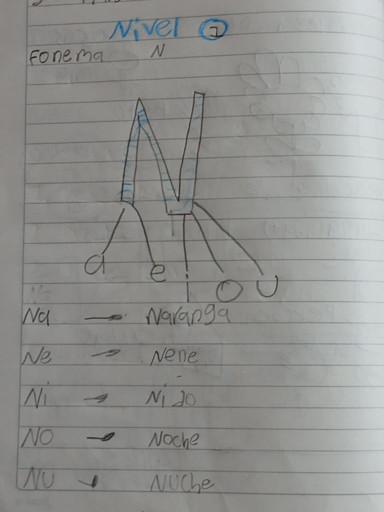
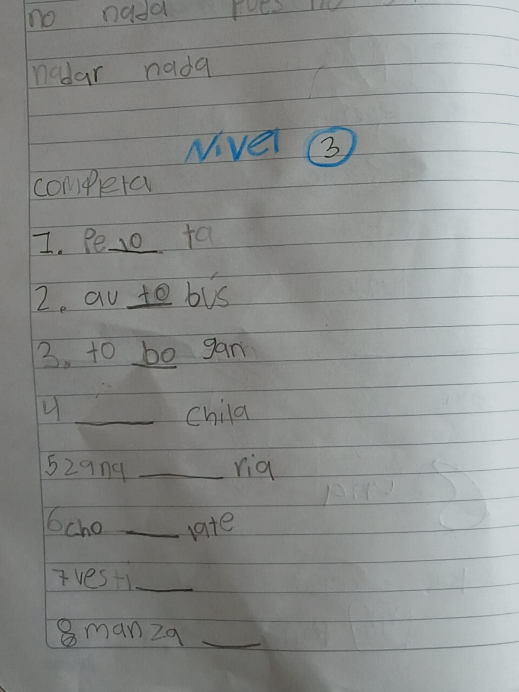
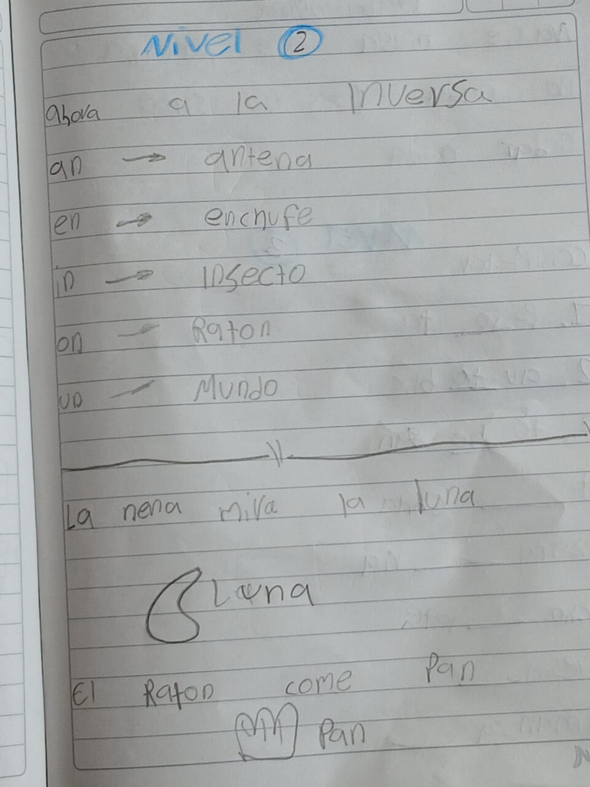

02 de marzo de 2026
Matemáticas
Actividades: Identificar patrones numéricos, números pares e impares.
Concepto de mitad de un número. De manera escrita y oral se reforzó el concepto de número par e impar.
Para reforzar: El concepto de mitad de un número.
Español
Actividades: Acompañamiento de maestras de apoyo y charla grupal.
Se usó el espacio para recalcar valores de convivencia.
Para reforzar: La escucha activa.
03 de marzo de 2026
Español
Actividades: Se repasó el Fonema /N/.
Se profundizó el uso de la letra N en diferentes combinaciones.
Se realizaron actividades de completado de palabras.
Para reforzar: combinaciones y completar palabras.



Naturales
Actividades: Se profundizó el tema de los seres vivos.
Se hizo la relación entre el proceso de crecimiento de las plantas y que los lápices provienen de la madera de los arboles.
Para reforzar: Recalcar la importancia de cuidar el medio ambiente.